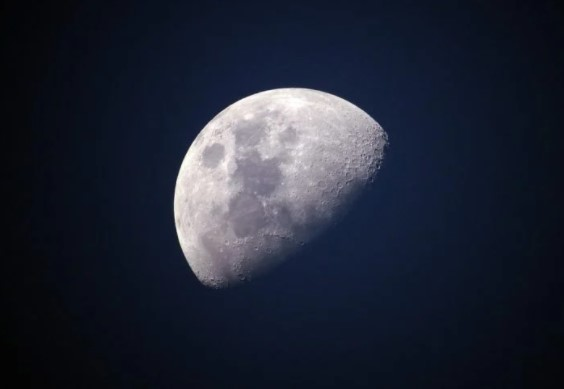

From garage inventors to university students and entrepreneurs, NASA is looking for ideas on how to excavate the Moon’s icy regolith, or dirt, and deliver it to a hypothetical processing plant at the lunar South Pole.
The NASA Break the Ice Lunar Challenge, now open for registration, is designed to develop new technologies that could support a sustained human presence on the Moon by the end of the decade.
“We are excited about this opportunity to broaden our community engagement in the Artemis program and explore new infrastructure approaches for the Moon,” said NASA’s Associate Administrator for the Space Technology Mission Directorate Jim Reuter.
“As outlined in our plan for sustained lunar exploration and development, NASA is pursuing technology development that allows future explorers to live off the land. With this challenge, we’re soliciting fresh ideas from outside the traditional aerospace sector for acquiring and processing resources needed to support long-duration human surface exploration.”
The Break the Ice Lunar Challenge will take place over two phases.
Phase 1 seeks new ideas and approaches for a system architecture capable of excavating and moving icy regolith and water on the lunar surface. Eligible Phase 1 participants must submit a system architecture report, excavation plan, and mission animation by June 18, 2021 that addresses various operations and environmental conditions of a hypothetical excavation mission on the lunar surface. The entries will compete for a portion of the $500,000 Phase 1 prize purse.
The initiation of Phase 2, the demonstration phase, is contingent on the emergence of promising submissions in Phase 1 that demonstrate viable approaches to achieving the challenge goals. Phase 2 would carry a prize purse of up to $4.5 million.
The Break the Ice Lunar Challenge is a NASA Centennial Challenge, managed by NASA’s Marshall Space Flight Center in Huntsville, Alabama, and NASA’s Kennedy Space Center in Florida. Centennial Challenges are part of the Prizes and Challenges program within NASA’s Space Technology Mission Directorate. NASA has contracted Ensemble Consultancy to support the management of competitors for this challenge.
To learn more about the challenge and register to participate, visit: nasa.gov/breaktheice
For more information about NASA’s Prizes and Challenges, visit:https://www.nasa.gov/solve/index.html